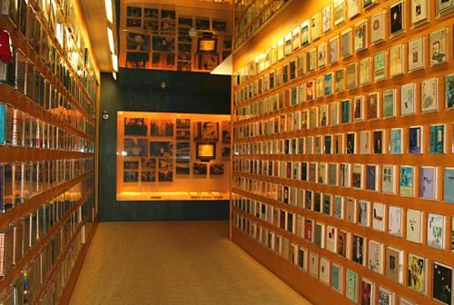

曾出版过多部艺术理论书籍的王其钧，一直想设计一本方便读者阅读、以图像揭示历史的视觉书，为读者提供一次直观感受和比较中华文明史与世界文明史的机会。“以往这类书籍都是竖排，最大的缺点是时间表是中断的，读者需要不断来回翻书研读。”因此，在设计《中外5000年文明互鉴》一书时，他就想到用横向时间轴的形式，采用公元纪年法，将历史年表、大事记、图片都围绕时间轴线依次展开。为了保证读者的思绪连贯，他用类似中国古代手卷的方式将该书设计成一本延绵铺展的“奏折式”图书，甚至可以作为“墙书”展示，供多人一起阅读。
要在一本书中浓缩中外五千年文明史，绝非易事。王其钧透露，对于入选文物的标准，他是从知名度、代表性、视觉形象的适宜性等方面来考虑的。“国外的部分，我尽可能地去考虑欧洲以外地区的文明。”贯穿全书的时间轴线，也不是死板的时间堆砌，而是依据历史发展，采用一种前松后紧的布局，“一开始是5000年一个单元，然后是2500年、1000年、500年、100年、50年一个单元”，体现出人类文明日益递增的发展速度与丰富的文明成果。
令人眼前一亮的，还有书中百余幅精美的手绘图片，这些图片不仅使文物的再现更加灵活，也更精细地描绘出文物的细节。比如，书中的紫禁城、泰姬陵、吴哥窟、圣马可教堂等著名建筑，通过手绘图，极为清晰地还原出其形制和细部，甚至再现了相机无法拍摄的内部结构。作为一位有建筑专业背景的“学者型画家”，王其钧从上世纪90年代初就开始绘制此类插图，积攒几十年下来，这批手绘图终于绽放光彩。
他还告诉记者，这样的“经折装”图书只能由纯手工完成装订，每一本书都蕴藏着匠心手作的诚意。最终，这本展开全长13.5米的书，用了整整四年才编撰、制作完成。
 关注湖南文化产业网微信公众号
关注湖南文化产业网微信公众号湖南文化产业网(www.hnci.net.cn)版权所有 (c) All Rights Reserved.
未经湖南文化产业网书面特别授权，请勿转载或建立镜像